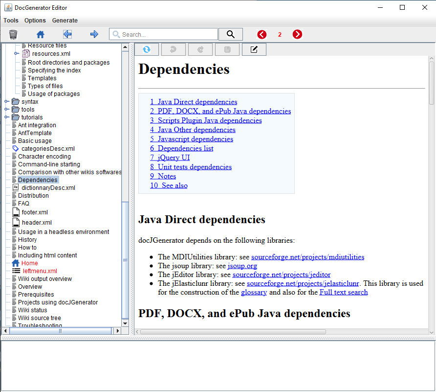
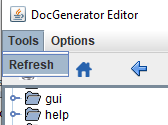
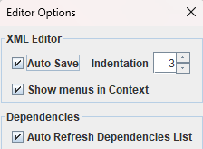
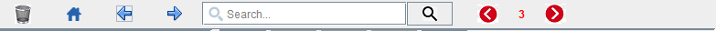
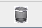
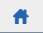
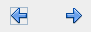

Home
Categories
Dictionary
Download
Project Details
Changes Log
What Links Here
How To
Syntax
FAQ
License
Editor window_2
The editor window has the following panels:
The "Refresh" item allows to parse and refresh the whole content of the wiki in the editor with the current content of the roots on the file system. The entire content of the articles tree in the editor will be updated.
The "Options" menu allows to change the way the dependency window will work.
The toolbar on top of the window allow to manage the content of the wiki and navigate in the wiki content. The toolbar has the following buttons:
- The top of the window presents a menubar and a toolbar allowing to manage the content of the wiki and navigate in the wiki content
- The left panel shows the tree of the wiki roots
- The right panel shows the content of the currently selected element in the tree
- The bottom panel is a message area showing potential parsing errors on the selected element in the tree

Editor menubar
The menubar has two menus:- The Tool menu allows to refresh the content of the wiki.
- The Options menu shows options to configure the usage of the editor
Refresh the wiki

The "Refresh" item allows to parse and refresh the whole content of the wiki in the editor with the current content of the roots on the file system. The entire content of the articles tree in the editor will be updated.
Options menu

The "Options" menu allows to change the way the dependency window will work.
Editor toolbar

The toolbar on top of the window allow to manage the content of the wiki and navigate in the wiki content. The toolbar has the following buttons:
-

: The trash button allows to manage the trash. The trash allows to recover deleted files exactly as in any graphical user interface system -

: The Home button allows to navigate to the index article -

: The back and forward button allows to navigate back or forward in the articles - : The autocomplete field is an auto-complete Search allowing to search in the articles exactly as in the search box as in the generated wiki
- : The editor search button allows to search for elements in the wiki
- : The errors navigation buttons allows to navigate in errors in the wiki
See also
- DocGenerator editor: This article explains the DocGenerator editor
- GUI interface: This article is about the GUI interface of the application
×

Categories: editor | gui